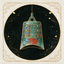
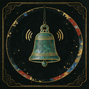
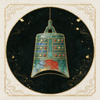

变更范围：仅 cat-music（沿用旧编钟，原样重导出）与 cat-audiobook（新绘：青铜耳麦 + 竹简 + 声波弧）。其余 14 个分类未动、未重导出。暗底 #0a0f0d 实拍。
| 旧 音乐（编钟） | 旧 有声书（钟铃） | 新 音乐（编钟·未改） | 新 有声书（耳麦+竹简） | |
|---|---|---|---|---|
| 16px |  |
|||
| 22px（列表实际档） | ||||
| 32px |  |
 |
||
| 48px |
png/ 两分类各档与 svg/、ico/ 覆盖到 public/cat-icons/shanhaijing/ 同名文件即可，cat-icon-sets.ts 映射无需改动。